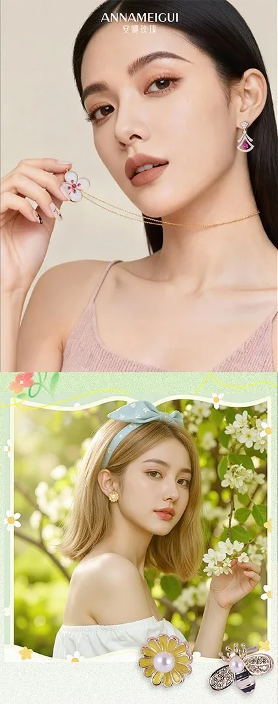
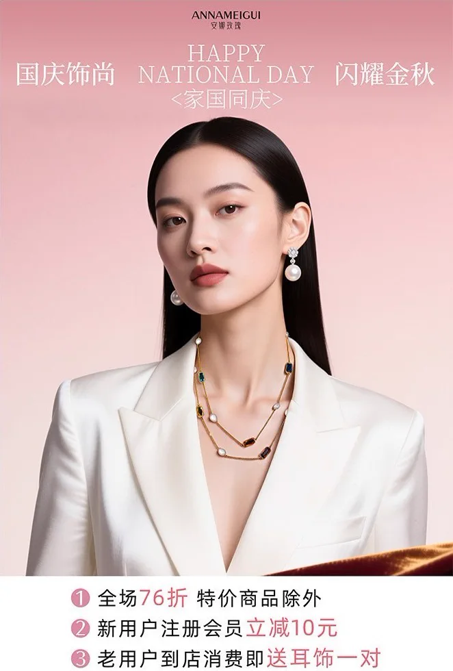

安娜玫瑰 时尚饰品 AI 视觉辅助
围绕时尚饰品品牌的日常上新与活动传播需求，使用 AI 辅助完成模特生成、饰品佩戴、 穿搭氛围和商业场景生产，再通过 Photoshop 进行修图、调色和版式设计， 形成可直接用于新品上新、门店活动与社媒传播的视觉物料。
- 品牌 / Brand
- 安娜玫瑰时尚饰品品牌
- 项目类型 / Type
- 饰品与穿搭AI 视觉辅助
- 我的职责 / Role
- 视觉概念 / AI 生成工作流 / 后期设计
- 工具 / Tools
- Seedream / ComfyUIPhotoshop
核心案例
秋冬新品上新
目标是在缺少完整实拍素材的情况下，快速完成秋冬饰品上新宣传。先生成符合品牌气质的亚洲模特， 再通过自建 ComfyUI 工作流控制耳饰、项链、围巾和服装搭配，最后完成海报排版与商业修图。

从素材限制到
可交付成品
这个项目解决的不是单纯“生成一张图”，而是把零散商品素材转化为可控、可重复、 可继续扩展的品牌内容生产方式。
先明确真实商业需求
新品上新需要模特气质、饰品露出、穿搭氛围和品牌信息，同时还要控制制作周期与拍摄成本。
建立可复用的 AI 工作流
将模特、饰品、姿势和服装搭配拆分控制，使同一套方法可以继续服务不同新品和营销主题。


成果延展
工作流继续应用到七夕、国庆、中秋、新品上新和日常促销。这里将整页提案拆成独立作品， 根据画面比例自然排列，方便观看每张商业视觉的构图和信息层级。






- Step 01需求拆解明确新品、传播主题、商品素材和交付尺寸。
- Step 02AI 生产生成模特与场景，并控制饰品、穿搭和品牌气质。
- Step 03商品融合通过工作流完成饰品佩戴、搭配调整和细节修复。
- Step 04商业交付完成修图、调色、版式和多场景传播延展。